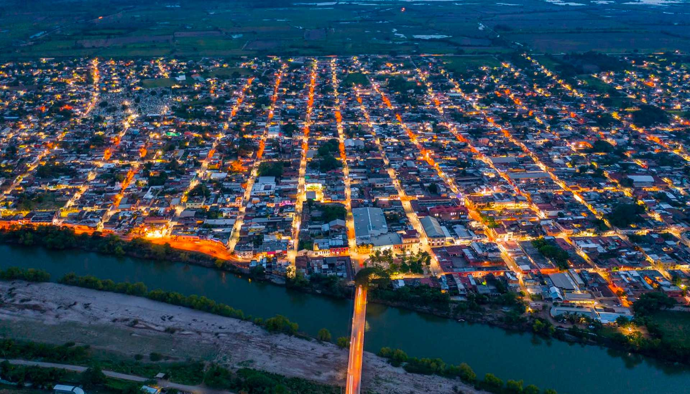
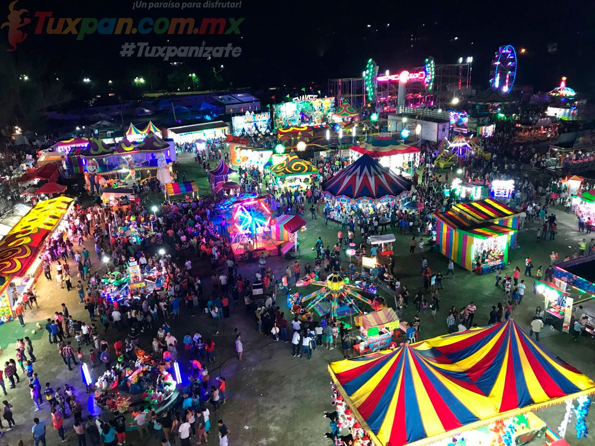
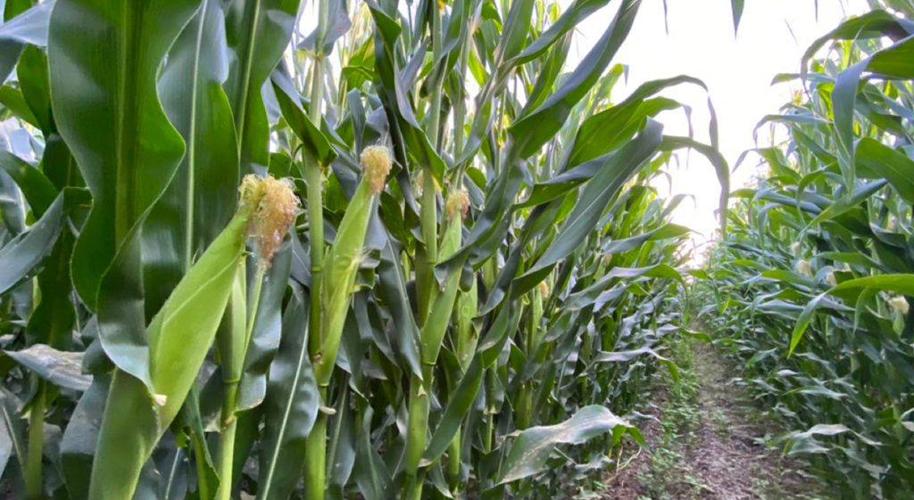

Tuxpan es un municipio ubicado en la region norte de Nayarit, Mexico. Limita al norte con el estado de Jalisco, al este con el municipio de Compostela, y al oeste con la costa del Pacifico.
En Tuxpan, las festividades m s importantes incluyen la celebracion en honor a la Virgen de Guadalupe, el 12 de diciembre, asi como la fiesta en honor a San Pedro y San Pablo, patron del municipio, celebrada en junio con danzas, musica y comidas tradicionales.
La economia de Tuxpan se basa principalmente en la agricultura y la pesca. Se cultivan productos como el maiz, el frijol, el chile y la ca a de azucar. Ademas, la pesca y la actividad turistica, debido a su cercania con la costa, juegan un papel importante en su desarrollo economico.
